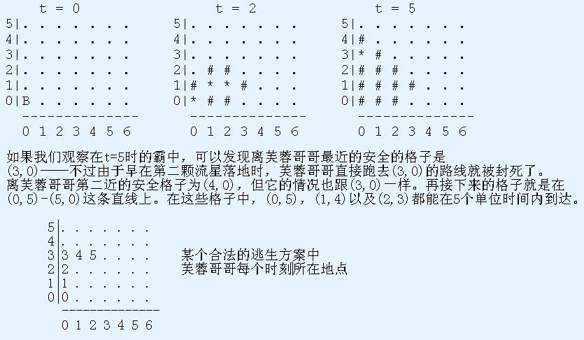

* 第1行: 1个正整数：M * 第2..M+1行: 第i+1行为3个用空格隔开的整数：X_i，Y_i，以及T_i
去年偶们湖南遭受N年不遇到冰冻灾害，现在芙蓉哥哥则听说另一个骇人听闻的消息： 一场流星雨即将袭击整个霸中，由于流星体积过大，它们无法在撞击到地面前燃烧殆尽， 届时将会对它撞到的一切东西造成毁灭性的打击。很自然地，芙蓉哥哥开始担心自己的 安全问题。以霸中至In型男名誉起誓，他一定要在被流星砸到前，到达一个安全的地方 （也就是说，一块不会被任何流星砸到的土地）。如果将霸中放入一个直角坐标系中， 芙蓉哥哥现在的位置是原点，并且，芙蓉哥哥不能踏上一块被流星砸过的土地。根据预 报，一共有M颗流星(1 <= M <= 50,000)会坠落在霸中上，其中第i颗流星会在时刻 T_i (0 <= T_i <= 1,000)砸在坐标为(X_i, Y_i) (0 <= X_i <= 300；0 <= Y_i <= 300) 的格子里。流星的力量会将它所在的格子，以及周围4个相邻的格子都化为焦土，当然 芙蓉哥哥也无法再在这些格子上行走。芙蓉哥哥在时刻0开始行动，它只能在第一象限中， 平行于坐标轴行动，每1个时刻中，她能移动到相邻的（一般是4个）格子中的任意一个， 当然目标格子要没有被烧焦才行。如果一个格子在时刻t被流星撞击或烧焦，那么芙蓉哥哥 只能在t之前的时刻在这个格子里出现。请你计算一下，芙蓉哥哥最少需要多少时间才能到 达一个安全的格子。
* 第1行: 1个正整数：M * 第2..M+1行: 第i+1行为3个用空格隔开的整数：X_i，Y_i，以及T_i
输出1个整数，即芙蓉哥哥逃生所花的最少时间。如果芙蓉哥哥无论如何都无法在流星雨中存活下来，输出-1
4
0 0 2
2 1 2
1 1 2
0 3 5
输入说明:
一共有4颗流星将坠落在霸中，它们落地点的坐标分别是(0, 0)，(2, 1)，(1, 1)
以及(0, 3)，时刻分别为2，2，2，5。
5
样例图示
